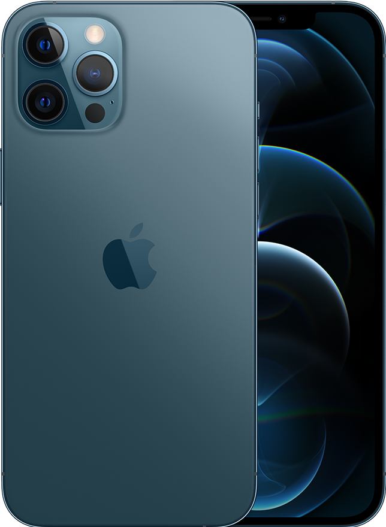

Iphone 12 Pro Max (256 GB, Azul Pacífico)

-
Marca
-
Tipo de Produto
-
Capacidade de Armazenamento
-
Cor
-
Tamanho da tela
-
Apple
-
Smartphone
-
256 GB
-
Azul Pacífico
-
6.7 Polegadas
- Sobre este item
- Com chip A14 Bionic, o mais rápido em um smartphone, e sistema de câmera Pro, que deixa as fotos em
pouca luz claramente melhores — uma diferença ainda mais nítida no iPhone 12 Pro Max
-
A tela Super Retina XDR vai literalmente de ponta a ponta. A frente é em Ceramic Shield, que é
quatro vezes mais resistente a quedas
-
A velocidade do 4G LTE pode chegar a 2 Gbps. Dá para fazer streaming de vídeos com alta qualidade,
baixar arquivos grandes e compartilhar fotos mais rápido do que nunca. Seu iPhone também está
preparado para toda a velocidade do 5G. Afinal, ele conta com mais bandas LTE e 5G do que qualquer
outro smartphone
-
O LiDAR cria mapas de profundidade precisos em nanossegundos. Ele posiciona objetos instantaneamente
e permite experiências em realidade aumentada ainda mais realistas
-
O modo Noite chegou às câmeras grande-angular e ultra-angular e está ainda melhor em registrar cores
naturais nos ambientes com baixa iluminação. Além disso, a nova câmera grande-angular agora captura
27% mais luz